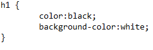
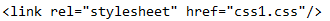
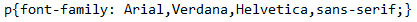
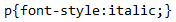
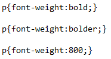
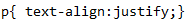
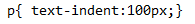

CSS
Estructura basica de CSS
La sintaxis basica de un documento CSS es :

Para vincular tu documento CSS :

h1 : Es el nombre que le hemos puesto a la etiqueta en HTML
Despues se abren corchetes
Dentro de los corchetes pones el atributo seguido de : y despues la propiedad seguida de putno y coma
Y por ultimo se cierra el corchete
Atributos CSS
Sirve para indicar el tipo de fuente que vas a utilizar
Se puede poner mas de una por la fuente no tiene instalada la primera

Font-style
Sirve para indicar el estilo de fuente que vas a utilizar

Font-weight
Sirve para definir el grosor de la letra que vamos a utilizar

Font-align
Sirve para alinear el texto

Text-indent
Sirve para aplicar la cabecera al texto

- Cajas
Existen dos propiedades para crear cajas : height (altura) y weight (anchura)
Adeams existen mas propiedades para organizar mejor las cajas :
- Margin : Margenes
- Padding : Espacio entre el contenido del elemento y el borde
- Border : Sirve para editar los bordes : color , estilo , ancho
Background-color
Sirve para para cambiar el fondo a un color
Background-image
Sirve para para cambiar el fondo y poner una imagen
Background-repeat
Sirve para cambiar el numero de repeticiones de la imagen del fondo
Background-position
Sirve para cambiar la poscion de la imagen del fondo
Background-attachment
Sirve para que la imagen del fondo sea fija